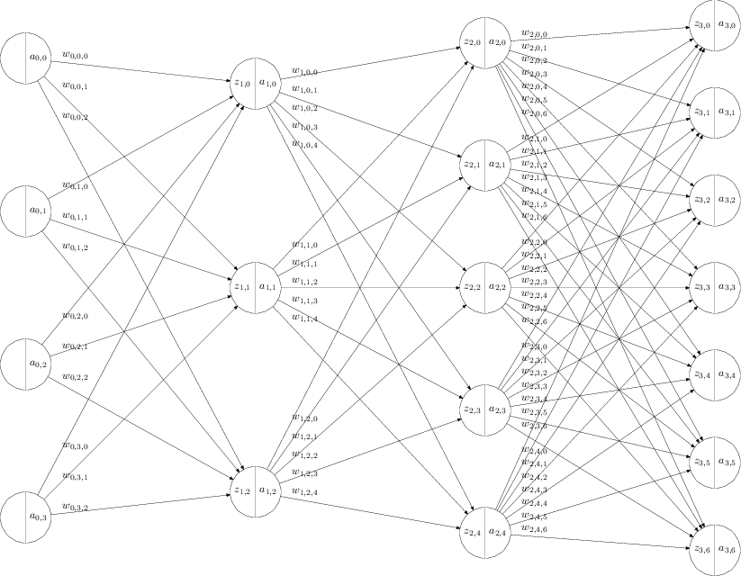

Back Propagation 算法的向量表示
back propagation 中描述的是按照单个元素，本文试图用向量和矩阵表示模型。
神经网络建模

\[ \begin{align} z_{l,j} &= b_{l,j} + \sum_{i=0}^{N_{l-1} -1 } w_{l-1,j,i} a_{l-1,i} \\ a_{l,j} &= \sigma(z_{l,j}) \end{align} \]
其中
- \(L\) 为神经网络的层数，包含输入层，包含输出层。上面的例子中是 4 层神经网络
- \(l = 0,...,L-1\) 是层的下标
- \(N_{l}\) 是第 \(l\) 层神经网络的神经元的个数
- \(j = 1, ..., N_{l}\) 每一次的第 \(j\) 个神经元的下标
- \(z_{l,j}\) 是第 \(l\) 层神经网络中，第 \(j\) 个神经元的 sigmoid 函数的输入。
- \(a_{l,j}\) 是第 \(l\) 层神经网络中，第 \(j\) 个神经元的 sigmoid 函数的输出。特别的，当 \(l=0\) 时， \(a_{0,i}\) 表示输入层，\(N_0\) 表示输入层的个数。
- sigmoid 函数可以是，例如 \[\sigma(x) = \frac{1}{1+e^{-x}}\]
- \(w_{l-1,j,i}\) 是第 \(l-1\) 层中第 \(i\) 个输出和 \(l\) 层的第 \(j\) 个输入之间的权值。
- \(b_{l,i}\) 是第 \(l\) 层中第 \(j\) 个神经元的偏移量
重新用向量和矩阵定义模型
\[ \begin{align} \vec{z}_l &= \vec{b}_l + \matrix{W}_{l-1} \vec{a}_{l-1}\\ \vec{a}_{l} &= \sigma(\vec{z}_{l} ) \\ \vec{a}_{l-1} &= \sigma(\vec{z}_{l-1} ) \end{align} \]
其中
- \(\vec{z}_l\) 是第 \(l\) 层神经元的输入向量。
- \(\vec{a}_l\) 是第 \(l\) 层神经元的输出向量。
- \(\matrix{W} _ {l-1}\) 是第 \(l-1\) 层神经元和 \(l\) 层神经元之间的权重矩阵是 \(N_{l} \times N_{l-1}\) 维矩阵
- \(N_{l}\) 是第 \(l\) 层神经元的个数
- \(N_{l-1}\) 是第 \(l-1\) 层神经元的个数
- \(\vec{b}_l\) 是第 \(l\) 层神经元的偏移量向量。
- sigmoid 函数可以是，例如 \[\sigma(x) = \frac{1}{1+e^{-x}}\]
- \(\sigma({\vec{x}})\) 表示应用函数 \(\sigma\) 到向量 \(\vec{x}\) 的每一个元素上，产生的一个新的同维向量。
back propagation
目的
给定一个训练样本 \(\vec{a}_{0}\), 和期待的输出 \(\vec{y}\) 。
\(\vec{a}_{0}\), 表示输入层的神经元产生的输出。
定义成本函数如下
\[ \begin{align} C &= \frac{1}{2} (\vec{y} - \vec{a} _ {L-1})^T \cdot (\vec{y} - \vec{a} _ {L-1})\ &= \frac{1}{2} <(\vec{y} - \vec{a} _ {L-1}), (\vec{y} - \vec{a} _ {L-1}) > \end{align} \]
其中
- \(\vec{x}^T\) 表示向量的转置。
- \(\vec{x} \cdot \vec{y}\) 表示向量的内积。
- \(\vec{a}_ {L-1}\) 表示选取了一组 \(\matrix{W}_{l}\) 和 \(\vec{b}_l\) 之后，\(l=0...L-1\) ，输出层神经元的输出。
解决方案
梯度的定义
\[ \begin{align} \frac{\partial{C}}{\partial{\matrix{W} _ {l-1}}} &= \left(\begin{array}{cccc} \frac{\partial{C}}{\partial{w _ {l-1,0,0}}} & \frac{\partial{C}}{\partial{w _ {l-1,0,1}}} & \cdots & \frac{\partial{C}}{\partial{w _ {l-1,0,N _ {l-1}-1}}} \ \frac{\partial{C}}{\partial{w _ {l-1,1,0}}} & \frac{\partial{C}}{\partial{w _ {l-1,1,1}}} & \cdots & \frac{\partial{C}}{\partial{w _ {l-1,1,N _ {l-1}-1}}} \ \vdots & \ddots & & \vdots \ \frac{\partial{C}}{\partial{w _ {l-1,N _ {l}-1,0}}} & \frac{\partial{C}}{\partial{w _ {l-1,N _ {l}-1,1}}} & \cdots & \frac{\partial{C}}{\partial{w _ {l-1,N _ {l}-1,N _ {l-1}-1}}} \end{array}\right) \ \frac{\partial{C}}{\partial{\vec{b} _ {l}}} &= \left( \begin{array}{c} \frac{\partial{C}}{\partial{b _ {l,0}}} \ \frac{\partial{C}}{\partial{b _ {l,1}}} \ \vdots \ \frac{\partial{C}}{\partial{b _ {l,N _ {l} - 1}}} \end{array} \right) \end{align} \]
其中
- \(N _ {l}\) 是第 \(l\) 层神经元的个数
- \(N _ {l-1}\) 是第 \(l-1\) 层神经元的个数
梯度降低的方法，随机选取一组答案，然后沿着梯度方向，即 \(\frac{\partial{C}}{\partial{\matrix{W} _ {l-1}}}\) 和 \(\frac{\partial{C}}{\partial{\vec{b} _ {l}}}\) ，减小。 逐步找到合适的答案，\(\matrix{W} _ {l-1}\) 和 \(\vec{b} _ {l}\) 。
那这里的问题就是，如何求 \(\frac{\partial{C}}{\partial{\matrix{W} _ {l-1}}}\) 和 \(\frac{\partial{C}}{\partial{\vec{b} _ {l}}}\) ？
推导
如果定义
\[\vec{\delta} _ {l}= \frac{\partial{C}}{\partial{\vec{z} _ {l}}}\]
\(\vec{\delta} _ {l}\) 的含义就是，如果神经元输入 \(\vec{z} _ {l}\) 变化一点点， 会导致成本函数 \(C\) 变化多少？（TODO: 应该用 \(\triangledown\) 表示，否则有歧义，见下面）
因为
\[ \vec{z} _ l = \vec{b} _ l + \matrix{W} _ {l-1} \vec{a} _ {l-1} \]
根据链式求导法则，就得出了下面的公式。
\[ \begin{align} \frac{\partial{C}}{\partial{W _ {l-1}}} &= \vec{\delta} _ {l} \vec{a} _ {l-1} ^T \end{align} \]
其中
- \(\vec{\delta} _ {l}\) 是一个 \(N _ {l} \times 1\) 的向量。
- \(\vec{a} _ {l-1}\) 是一个 \(N _ {l-1} \times 1\) 的向量。
- \(\matrix{W}\) 是一个 \(N _ {l} \times N _ {l-1}\) 的矩阵。
类似的
\[ \begin{align} \frac{\partial{C}}{\partial{\vec{b} _ {l}}} &= \vec{\delta} _ {l} \end{align} \]
那么现在的关键是如何求 \(\vec{\delta} _ {l}\)
思路类似于自然归纳法，就是先求 \(\vec{\delta} _ {L-1}\) ，然后假设已知所有 \(\vec{\delta} _ {l}\) ，如果求 \(\vec{\delta} _ {l-1}\) 。
首先考虑第 \(L - 1\) 层，即最后一层。
\[ \begin{align} \vec{\delta} _ {L-1} &= \frac{\partial{C}}{\partial{\vec{z} _ {L-1}}} \end{align} \]
根据链式求导法则
\[ \begin{align} \delta _ {L-1,j} &= \frac{\partial{C}}{\partial{\vec{a} _ {L-1}}} \otimes \sigma'(\vec{z} _ {L-1}) \ &= \left( \triangledown _ {\vec{a} _ {L-1}}C \right) \otimes \sigma'(\vec{z} _ {L-1}) \end{align} \]
其中
- \(\otimes\) 表示向量元素两两相乘，得到的新向量。
- \(\frac{\partial{C}}{\partial{\vec{a} _ {L-1,j}}}\) 表示针对向量 \(\vec{a}\) 的每一个元素求偏导数。也表示成 \(\triangledown _ a\) (TODO: 表示成 \(\triangledown _ a\) 更合适，因为前者有歧义，针对向量的方向导数也是这么表示的，后面还是尽量用 \(\triangledown _ a\) 表示)
这样，我们得到了最后一层的 \(\delta _ {L-1,j}\)。
我们递归的向后回溯，假设已知所有 \(\delta _ {l,j}\) ，如果求 \(\delta _ {l-1,j}\) 。
\[\vec{\delta} _ {l-1}= \triangledown _ {\vec{z} _ {l-1}}C\]
根据链式求导法则 \[ \begin{align} \vec{\delta} _ {l-1} &= \left(\matrix{W} _ {l-1}^T \vec{\delta} _ {l} \right)\otimes \sigma'(\vec{z} _ {l-1}) \end{align} \]
- 其中 \(\vec{\delta} _ {l-1}\) 是 \(N _ {l-1}\) 维向量。
- 其中 \(\vec{\delta} _ {l}\) 是 \(N _ {l}\) 维向量。
- 其中 \(\matrix{W} _ {l-1}\) 是 \(N _ {l} \times N _ {l-1}\) 维矩阵。
- 其中 \(\vec{z} _ {l-1}\) 是 \(N _ {l-1}\) 维向量。